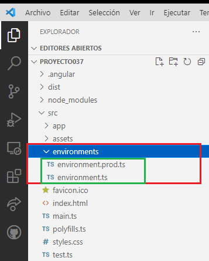

La carteta environments se encuentra localizada dentro de la carpeta 'src' del proyect Angular y tiene inicialmente 2 archivos:
Lo más común cuando uno construye un proyecto, el mismo pase como mínimo por dos estados:
Podemos ejecutar nuestra aplicación en modo de desarrollo mediante el código (normalmente siemple lo hemos hecho de esta forma):
ng serve -o
Pero si queremos ejecutarlo tal cual va a quedar cuando lo subamos al servidor de producción debemos ejecutar:
ng serve -o --configuration production
Tener en cuenta que cuando compilamos el proyecto para subirlo al servidor lo hacemos con la sintaxis:
ng build
Es decir que el código generado es el mismo que obtenemos con la ejecución en forma local: ng serve -o --configuration production
environment.ts Se especifican todas las variables, constantes, funciones, clases, módulos etc. que se deben incluir cuando estamos en modo de desarrollo.
Contenido inicial:
// This file can be replaced during build by using the `fileReplacements` array.
// `ng build --prod` replaces `environment.ts` with `environment.prod.ts`.
// The list of file replacements can be found in `angular.json`.
export const environment = {
production: false
};
/*
* For easier debugging in development mode, you can import the following file
* to ignore zone related error stack frames such as `zone.run`, `zoneDelegate.invokeTask`.
*
* This import should be commented out in production mode because it will have a negative impact
* on performance if an error is thrown.
*/
// import 'zone.js/dist/zone-error'; // Included with Angular CLI.
environment.prod.ts Se especifican todas las variables, constantes, funciones, clases, módulos etc. que se deben incluir cuando estamos en modo de producción.
Contenido inicial:
export const environment = {
production: true,
};
Angular CLI cuando creamos un proyecto solo crea la constante llamada 'environment' que se trata de un objeto literal con un atributo 'production'.
Como es lógico en el archivo 'environment.ts' inicia el atributo con el valor 'false' ya que seguramente estamos desarrollando la aplicación y no se encuentra en producción. En cambio en el archivo 'environment.prod.ts' inicia el atributo 'production' con el valor 'true' ya que la aplicación se esta ejecutando en modo producción.
Si ejecutamos la aplicación en modo desarrollo luego se carga en el proyecto el archivo 'environment.ts':
ng serve -o
Pero si ejecutamos la aplicación en modo producción luego se carga el archivo 'environment.prod.ts':
ng serve -o --configuration production
Significa que cuando construimos la aplicación que subiremos al servidor el contenido del archivo que se cargará será 'environment.prod.ts'.
Podemos abrir el archivo 'main.ts' que sabemos que se encuentra en la carpeta 'src':
import { enableProdMode } from '@angular/core';
import { platformBrowserDynamic } from '@angular/platform-browser-dynamic';
import { AppModule } from './app/app.module';
import { environment } from './environments/environment';
if (environment.production) {
enableProdMode();
}
platformBrowserDynamic().bootstrapModule(AppModule)
.catch(err => console.error(err));
Como vemos en este archivo se importa el contenido de 'environment':
import { environment } from './environments/environment';
Y luego según el estado del atributo 'production' se llama al método 'enableProdMode()':
if (environment.production) {
enableProdMode();
}
Podríamos pensar que siempre se importa el archivo 'environment.ts' y nunca el archivo 'environment.prod.ts' ya que se importa siempre:
import { environment } from './environments/environment';
Lo que sucede es que Angular copia el contenido del archivo environment.prod.ts al archivo environment.ts cuando lo ejecutamos en modo producción o lo compilamos para producción:
ng serve -o --configuration production
En forma sencilla podemos comprobar si hacemos la siguente modificación al archivo 'main.ts':
import { enableProdMode } from '@angular/core';
import { platformBrowserDynamic } from '@angular/platform-browser-dynamic';
import { AppModule } from './app/app.module';
import { environment } from './environments/environment';
if (environment.production) {
enableProdMode();
}
console.log(environment.production);
platformBrowserDynamic().bootstrapModule(AppModule)
.catch(err => console.error(err));
Si ejecutamos en modo de desarrollo la aplicación:
ng serve -o
Luego en la consola se imprime el valor 'false'.
Pero si ejecutamos la aplicación en modo producción o construimos la aplicación para producción:
ng serve -o --configuration production
Luego en la consola se imprime el valor 'true'.
Este resultado se logra gracias a que el archivo 'enviroment.ts' es dinámico, depende del modo de compilación para que seleccione uno u otro archivo de la carpeta 'environments'.
La acción de que archivo debe copiar al archivo 'enviroment.ts' depende de la configuración definida en el archivo 'angular.json':
"fileReplacements": [
{
"replace": "src/environments/environment.ts",
"with": "src/environments/environment.prod.ts"
}
],
Aquí es donde se especifica que si compilamos la aplicación en un ambiente de producción el archivo "src/environments/environment.ts" debe ser remplazado por "src/environments/environment.prod.ts".
Dependiendo de la complejidad del proyecto, Angular permite crear más ambientes aparte de los de producción y desarrollo.